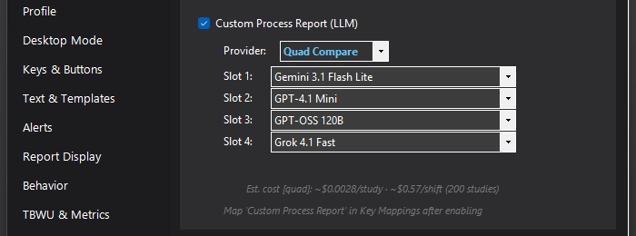

Custom Process Report
An experimental alternate to Process Report where MosaicTools itself calls an LLM of your choice — Gemini, OpenAI, Groq, or xAI Grok, or all four racing in Quad Compare — instead of Mosaic's built-in one.

What it does
Normal Process Report hands your dictation to Mosaic's own LLM. Custom Process Report bypasses that entirely: MosaicTools reads the transcript and template directly (via the Chrome DevTools Protocol connection to Mosaic), sends them to a cloud LLM you configure, and writes the merged report back. It lives under the "Beyond Experimental" divider for a reason — it works, but it replaces a core Mosaic function, so treat it as a power-user experiment.
How to turn it on / set it up
- Settings → Experimental, scroll to the BEYOND EXPERIMENTAL section, and check Custom Process Report (LLM). CDP must be enabled (also on the Experimental tab).
- Pick a Provider: Google Gemini, OpenAI GPT, Groq, xAI Grok, or Quad Compare — which races one model from each of the four providers and uses the result you prefer. Each provider needs its own API key ("Get Key" buttons link to the right console); model pickers show per-million-token pricing.
- Map Custom Process Report to a key or button under Keys & Buttons — it does not replace your normal Process Report mapping.
Using it
Press your Custom Process Report key instead of (or alongside) the regular one. The transcript and template go to your chosen LLM and the structured report is written back into Mosaic.
Tips & gotchas
- These are paid cloud APIs billed to your own keys — costs are small per report, but they're yours.
- PHI is scrubbed before anything is sent.
- Keep regular Process Report mapped too: if CDP is down or the provider errors, the built-in path is the fallback.
- MTRec boxes and the other post-process surfaces are built around the standard Process Report flow; the custom path is primarily about the report text itself.